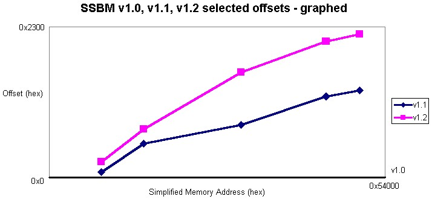
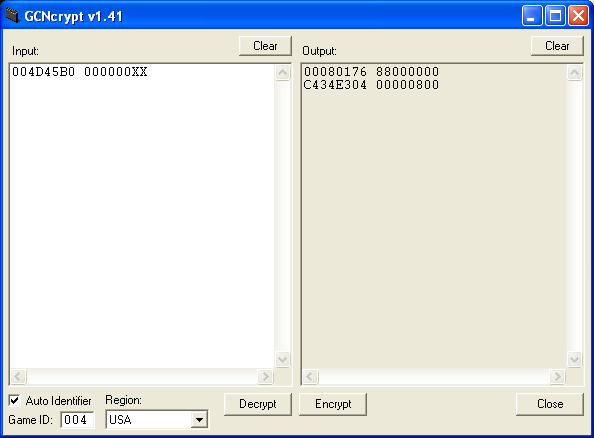

Alright I've noticed quite a bit of conversion issues with some games (RE4 Breast modifier codes)
So if you don't want to learn how to do it, (Which I recomend you should learn how to do so,) then post them here. IE Conversion from this xxxxxxxx xxxxxxxx to this xxxx-xxxx-xxxxx. I'm just trying to help people out. Read further down if you want to learn how to do it for yourself. Or just post your modifier codes for the GCN here.
This can also help with converting codes from one version to another or from different regions or different platforms! If you understand it that is.
Now Instead of posting a link to how to do it I will just copy/paste them from the sites here. First off let's start with giving credit where said credit is due. Thanks to ARcentral.net for all the fantastic FAQ's, Codes, and forums.
http://arcentral.net/FAQs/convert.php
http://arcentral.net/FAQs/GCNcrypt_Tutorial.php
Hope I could be of help. Now remember if you didn't want to learn how to do it, then why did you just read that? I also tried my best to make it look like the real deal on the website.
-Base
If you have any questions quote where you need the help at and I will try to help translate it into something less confusing, ok?
So if you don't want to learn how to do it, (Which I recomend you should learn how to do so,) then post them here. IE Conversion from this xxxxxxxx xxxxxxxx to this xxxx-xxxx-xxxxx. I'm just trying to help people out. Read further down if you want to learn how to do it for yourself. Or just post your modifier codes for the GCN here.
This can also help with converting codes from one version to another or from different regions or different platforms! If you understand it that is.
Now Instead of posting a link to how to do it I will just copy/paste them from the sites here. First off let's start with giving credit where said credit is due. Thanks to ARcentral.net for all the fantastic FAQ's, Codes, and forums.
http://arcentral.net/FAQs/convert.php
Quote: donny2112Since there are multiple regions for games (Jap, U.S., Europe) and sometimes multiple versions in a single region (U.S. SSBM v1.0, v1.1, v1.2), there often arises the desire to have the code in one region/version converted to another region/version. This write-up deals with the basics of that conversion process.
Offsets:
The difference in memory address between codes for two versions/regions of a game is called an offset. This just means that the addresses are offset from each other.
Finding an offset is often easy. Making sure its the best one to work with for your code requires more understanding.
How to find an offset:
1. Take a raw code that exists for both versions/regions. Ideally they should be writing the same value and not be an ASM or (m) code. While it is possible to use ASM codes (eg. 60000000, 38030000; ie. complex looking values) to determine the offset at that area of memory, it can lead to incorrect results.
2. Remove code type formatting (to pull out just the memory address) and find the difference between the two codes by subtracting.
Note: If one version is lower than the other version, it will typically stay lower in all converted codes.
Repeat steps 1 and 2 for all codes that exist in both versions/regions. You now know the offsets at those memory addresses. However, offsets increase in abrupt steps as you proceed in memory.
How to convert your code:
1. Find the memory address (with a known offset) in the region you are converting from that is nearest the code you wish to convert.
2. Apply that offset and test.
Note: For 99% of all the plain 8/16/32-bit writes, you should use the value from the original code in your converted code. I am not sure what the 1% would be (outside of ASM, which can easily change the value and is another good reason to not have high expectations of converting it), but I'll leave it open, just in case.
If it works, congratulations! If it doesnt, recognize that offsets increase the farther you are into memory. If the code you want to convert comes after a known offset, increase the guess offset by 4. If it comes before, decrease the guess by 4.
Of course, the closer the known offsets are to the code you wish to convert, the better the chance of actually getting the correct offset.
Here is an example graph showing the relative offsets from SSBM v1.0 of SSBM v1.1 and v1.2. Real, known offsets were used.

Notes: I have found this method to be most applicable to different versions of games (e.g. 1.0, 1.1) and generally the same between regions. However, I'd like to point out some specific examples that "buck the trend."
1. Region Conversions: In general region conversions still follow the idea of a trending offset through memory. However, sometimes the trend is backwards from what I have seen between versions.
Example:
SSBM PAL is lower than SSBM v1.0, but whereas you would normally expect it to be close at lower memory addresses and farther apart at higher addresses, it is actually the opposite. SSBM PAL gets closer to SSBM v1.0 as you go up in memory.
v1.0 Addr PAL Offset
00450CAC -D2A0
00469722 -D230
004D9000 -CB60
Now, it still follows a trend, but it is opposite what I would normally expect that trend to be.
2. Slight Variations in the "trend": The offset from a lower version to a higher version generally increases in memory. However, I have run into at least one example of a slight variation, and I do mean slight.
v1.0 Addr v1.1 Offset
00469722 12E8
004D473C 1460
004D9000 1458
As I said, a slight variation, but I just want you to realize that these instructions will send you in the right direction most of the time. However, there are a few "gotcha's" to keep an eye out for.
3. Converting between systems: Normally you may not expect to be able to convert a PS2 code to GameCube and vice-versa, but it is possible.
In Pac-Man World 2, there are a lot of items you can collect in each level. When looking at the decrypted codes for the items between the PS2 and GameCube versions of the games, I realized that the items were all offset from each other the same in both systems. Using that, I was able to successfully port the 999 Pac-Dots codes from the PS2 version to GameCube. In this case, it was a section of memory (the amount of each item collected in a level) that was laid out the same in each system's games. Most of the other Pac-Man World 2 codes weren't transferrable between systems, though.
When looking for possible codes to convert, don't forget to check out the codes for PS2 (and N64, NES, and SNES, as GameCube has a few of those games, as well.).
Appendix[/b]
Background/Foundation
The first thing you need to be able to do is to pull the memory location out of a formatted, unencrypted AR code. (hex familiarity is a must) For simplicity, I will be ignoring the leading 8 on memory addresses. For the GameCube, the max possible memory location is 017FFFFF, because it has 24 MB of memory.
The most common AR code types you will probably see are 8/16/32-bit writes.
8-bit write - 00000000 + address (value like 000000xx)
16-bit write - 02000000 + address (value like 0000xxxx)
32-bit write - 04000000 + address (value like xxxxxxxx)
where x is a character you wish to write.
Example:
8-bit write - 0046A428 00000012
16-bit write - 0246A428 00001234
32-bit write - 0446A428 12345678
If you are converting an existing code, it is usually best to use its code type (i.e. if it starts with an 04, you start with an 04).
Important: In most conversions, the code type of the code converting from will be the code type for your code, as well. However, it is necessary to recognize the base address to smartly determine the correct offset.
Quiz:
Q: What is the memory location and bit size to write for this code? 04453238
A: The memory location is 00453238, and the bit size to write is 32-bit.
Q: Is 039F634B a valid address for an AR code?
A: No. A 16-bit write would go up to 037FFFFF and 32-bit writes start at 04000000.
Converting Codes Example: (SSBM v1.1 to v1.2)
1. Take the code to convert and find its memory location.
All 293 Trophies v1.1 (addresses only)
0245B6B0
0245B6B5
What's the memory location? If you answered 0045B6B0 and 0045B6B5, you are correct.
What size write is this? If you answered 16-bit, you are correct.
You now have a v1.1 memory location for "All 293 Trophies."
2. Find an existing code in v1.1 that is close to the memory location to convert that also exists in v1.2.
All Bonuses v1.1 (address only)
0045B668
3. Find the offset between the two known codes.
All Bonuses v1.2 (address only)
0045C348
0045C348 - 0045B668 = CE0
4. As a first guess, use this offset to convert to v1.2.
0045B6B0 + CE0 = 0045C390
0045B6B5 + CE0 = 0045C395
Since this is a 16-bit write, add 02000000 to these values.
0245C390
0245C395
These would be the first tries for the memory location for converting "All Trophies" to v1.2.
It happens that these are the correct values for v1.2's "All Trophies," but if they weren't, a next step would be to move around in word sizes (by 4's) to find the correct offset.
SummaryFind the memory location of the code to convert.
Find an existing code that exists in both versions around the same memory location.
Find the offset for the existing code.
Try that offset for a first "guess," and if it doesn't work, try moving around in memory to find the correct offset.Copyright 2006 Action Replay Central
http://arcentral.net/FAQs/GCNcrypt_Tutorial.php
Quote: Link MasterMany codes on this site are in raw text format, and need to be encrypted before use. These codes are 16digit numbers/letters with a single space rather than 2 hyphens that seperate parts of the code. To encrypt these codes, you must first download GCNcrypt,(Here, http://arcentral.net/Downloads/GCNcrypt-v1_5.zip,) and extract the files from the zipped folder.
To encrypt a raw code, you have to type (or copy and paste) the raw code in the Input field of the GCNcrypt program, then type in the correct Game ID, select the right Region, and hit Encrypt. Sounds easy right? Well there's a little bit more to it than that.
Some raw codes simply have to be encrypted as is, while most others will require you to change values before encrypting. Anytime you see an X in the code, you have to replace it with a value listed in the code's note. Sometimes you will not find any values listed though. In this instance, you simply make one up, so long as it fits, and is within a specific range of values if one has been specified.
Most raw codes that have you replace a value have an XXdigit in them, which means you have to replace both with a 2digit value before encrypting. Some may even have more than one area with values that need to be changed and can include a Ydigit, a Zdigit, or even a Wdigit. Sometimes they might not even be an X, Y or Zdigit at all, but a different letter, so pay close attention to any notes made for that code.
Now I will demonstrate for you how to encrypt a code with an XXdigit that needs to be replaced with a 2digit value. The code I will use is the P1 Number of KOs code by GCN Hacker87 for NTSC(USA) Super Smash Bros. Melee v1.0.
First you will need to find the NTSC(USA) Super Smash Bros. Melee v1.0 Game ID. Every version of every game of every region has it's own Game ID that is required when encrypting codes, or they won't work. The easiest way to find a game's Game ID is to decrypt an already existing code for that game. It doesn't matter which code you use, but you should probably use the game's Master Code (m).
Now then, run the GCNcrypt program by double clicking on the gcncrypt.exe icon. Then type or copy and paste NTSC(USA) Super Smash Bros. Melee v1.0's Master Code (m) into the Input field of GCNcrypt and check the Auto Identifier check box as shown in this picture. (It is important that the Auto Identifier check box is checked or the Game ID won't appear when decrypted.)
Now hit the Decrypt button at the bottom and the Game ID (004) should appear in the Game ID field at the bottom left. Along with the Game ID it automatically selects the correct Region (USA), though since USA was already the selected Region, you wouldn't normally notice. Now hit the Clear button above the input field and type or copy and paste the P1 Number of KOs code in the Input field as shown in this picture.

Now we need to replace the XXdigit with a value, and since we don't have one noted, we need to make one up. In almost all cases, you have to use a Hex number in place of the XXdigit, so we must convert our value to Hex before we can replace the XXdigit and encrypt the code. To do so, you must take whatever number you want to use and convert it using a Hex converter or whatever program you choose.
Let's say you want to have 99 KOs. The Hex value of 99 is 63. Now replace the XXdigit with 63 and hit the Encrypt button. You will notice that it outputs 2 lines instead of one. That is because the first line is the verifier line. Every code made must contain a verifier. If you hit Encrypt again, the verifier line will be different. That is because the verifier line is randomly generated every time you encrypt a code. This does not mean you can use the same verifier for any code however. The Game ID and Region determine what the verifier will be, so it won't work for any codes of any other game.
Now you should have R5TH-G5NB-PA2V3 on the second line of the Output field, along with whatever verifier was outputted on the first line. If you did not get R5TH-G5NB-PA2V3 on the second line of the Output field, you did someting wrong. If you did get it, then you did it correctly and have successfully encrypted a code. Now go put that in your Action Replay and have some fun. Navigation
Home
Forums
Codes
FAQs
Reviews
Staff Bios.
Hall of Fame
Downloads
LinksCopyright 2006 Action Replay Central
Hope I could be of help. Now remember if you didn't want to learn how to do it, then why did you just read that? I also tried my best to make it look like the real deal on the website.
-Base
If you have any questions quote where you need the help at and I will try to help translate it into something less confusing, ok?